Overview
- Target audience
- Data Configurators
- Cross-functional Partners
- UX Lead | Product Managers | UX & Visual Designers | Engineers
- My Role
- UX Research Intern
- Timeframe
- June 2020 - July 2020 | Reltio Internship Project
- Problem Statement
- Reducing high rate of errors and tackle low adoption rates for data configurators.
- Goal of the study
- The goal of this study was to evaluate the usability, user experience, user responses, expectations and preferences for Data Validation.
- Methods Used
- In-Depth interviews | Persona creation | Usability testing | Metrics and goal setting | Task flow creation | Post study survey
- Impact
- The research study and subsequent design changes resulted in a 20% increase in the success rate | Set up 6 metrics baseline to keep track of performance in the long-run | 8 research insights have been implemented
Impact
Insights led to a 20% increase in the adoption rate and 40% decrease in the user error rate | Set up 6 metrics baseline to keep track of performance in the long-run | 8 research insights have been implemented
"Sagarika interned with my UX team in Summer and Fall 2020. I can't praise her enough: she took on challenges with enthusiasm and reached out to make connections across the company even with challenge of starting the job remotely during lockdown. She's extremely bright, understands the product/feature in discussion well, has a great ability to articulate her thoughts and is not afraid to voice her opinions. I was delighted to have her on my team"
-- Recommendation from Manager Carina Alabanza
The Problem
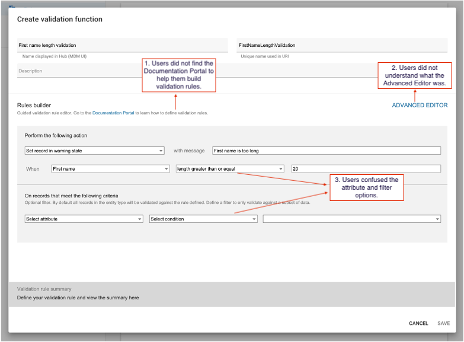
Data Validation simply refers to checking the accuracy and quality of data coming from sources and human entry before importing or processing data. There was no interface, the Data configurators used JSON expression writer to build Data Validation rules. Since, there was no User Interface and feedback user error rate was high and low adoption rate. This feature also allows to check for accuracy of the sources that inject data into Reltio Cloud.
Currently, most data validation features on the market are not user friendly and hard to use. Therefore, Reltio wanted to build its own Data Validation Function.
Data Validation Function -- is a feature that will help in sorting and filtering data before it enters the Reltio Cloud.
Research Foundation
I spent the first one week to understand the background, context, different use cases, business requirements, work objectives, and technical concepts (e.g. Reltio Cloud has 5 basic Data types and they are Int, Float, Number, String, and Date) that are a part of Data Validation Function. I used a Learning Plan* to organize my ideas, to see more clearly what questions need to be answered and hold discussions with stakeholders.
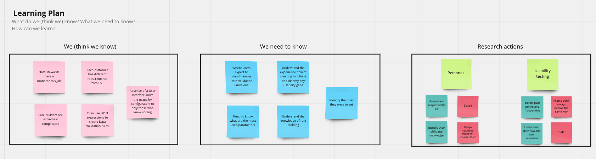
Research Process
Scoping the Research
In the early stages of exploring the problem space and solutions, we listed a number of assumptions about what a Data Validation Function should look like. In order to validate these assumptions with stakeholders, I interviewed with different product managers, designers, and Data Configurators. This helped us align our expectations about what to test, what not to test, and how long it could take.
I proposed creating a user journey map in the exploratory stage to supplement the interviews to better understand the users' mental model and expectations of how a Data Validation Function should work. I also thought it was best to do a usability testing as we were interested to know what roadblocks exist in the current feature. It has some advantages: flexible timing, direct observation and detailed feedback.
Research Goals
The goal of this study was to evaluate the usability, user experience, user responses, expectations and preferences for Data Validation to increase adoption rate and decrease error rates. This study focused on these specific areas:
- User scenarios
- Detect pain points and frustrations
- General usability of creating Validation functions
Target Users
Many departments in Reltio's Data Management team are involved in injecting data into Reltio Cloud and ensuring Data Quality. Each of them play an important role:
Data Experts
- They ensure Data quality in a tenant is good.
- They know exactly what good data looks like.
- What attributes to prioritize and what needs to be built in order to achieve this.
Data configurators
- They are responsible for building rules as indicated by the Data experts.
- They also trouble shoot rules.
Data stewards
- They execute tasks given that are laid out by Data experts and created by Data configurators.
Therefore, it was important to meet early and align everyone's understanding and expectations. We paid close attention to collaboration at each step — working closely with the core stakeholders, and engaging the extended stakeholders at the right time. We wanted to take all stakeholders on the journey with us so that there would be no big reveal and surprises at the end of it.
Understanding user journey
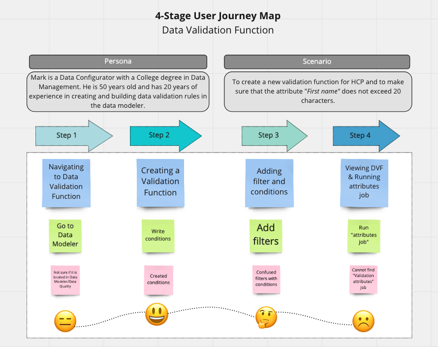
To understand the feature better, I created a User Journey Map after talking to stakeholders and interviewing a few data configurators. After interacting with the stakeholders I chose a scenario that they perform regularly and created journey map to understand their mental model about Data Validation Function, how they expect to create the rule builders, their pain points/frustrations and captured their emotions.
Remote Usability Testing
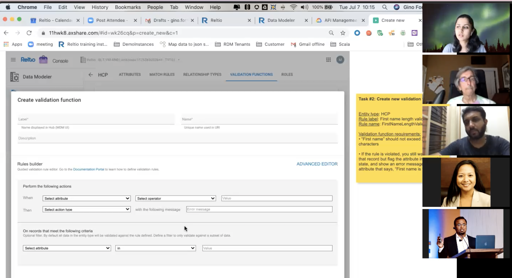
Before the official testing, I did some pilot testing with the team members who helped me finalize my research plan and the testing duration.
I conducted six (1 hour) usability sessions on the Data Validation Function prototype with Data Configurators in the United States.
During the testing sessions, I also invited the PM, my manager and the designer to observe my sessions to avoid bias and showcase user thinking and value the importance of research work.
Tasks:
- Navigation to Data Modeler
- Creating a Validation Function
- Editing a Validation Function (adding a filter)
- Function Validation
Metrics:
Data management is the core of the company, since our users were not using the feature and had low success rate, we wanted to create a guided experience where tasks are easy to complete, and the interface is very easy to navigate, Thus, the following metrics were selected to measure and monitor the impact of the design.
- Success rate
- Adoption rate
- Completion time for each task
- Ease of use for each task
Data Analysis Plan
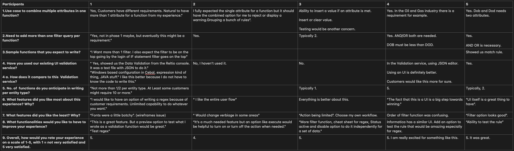
I created a task-based data log, thus I knew what data to capture for each of the 6 participants during testing session.
For the good part of this project, the data analysis was conducted in various forms.
- Coding data and creating themes
- End of day debriefs after testing
- Brain-writing and flow charts
- Video watching and insights analysis
After each session, I had a quick debrief with stakeholders to ensure they were getting the insights they needed and get consensus on the information we were getting. Then, I went back and watched videos to synthesize insights.
Issue Prioritization
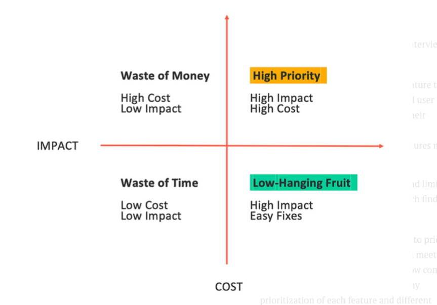
Sifting through our notes from user interviews, I created two documents:
- A detailed spreadsheet of each feature they use, coupled with user quotes and user observations that capture ways their experience can be improved;
- high-level ranking of which features matter most to our users, which was presented to the C-level executives.
Since the scope of the project is big and limited resources, the prioritization of research findings is vital.
To utilize all stakeholders' knowledge to prioritize the proposed initiatives, I facilitated a meeting with 6 stakeholders involved in the Data Validation function building process to discuss my prioritization of each feature and different workload for research findings.
As a result, the research findings that belong to the category of High Priority and Low-Hanging fruit are our focus in the next iteration.
UI Design
Once I tested out all usability mistakes, the results were then shared with the design team. The subsequent design changes were made based on the recommendations shared with the design team.
Evaluative usability testing
After the final prototype was ready, I set up usability testing with 3 out of 6 participants interviewed earlier. They were given the same tasks and asked to give their feedback on overall usability of the feature. Task completion rate and success rate was both measured to compare with the Formative usability testing results. The final prototype as seen below was finalized and was shipped to the engineering team.
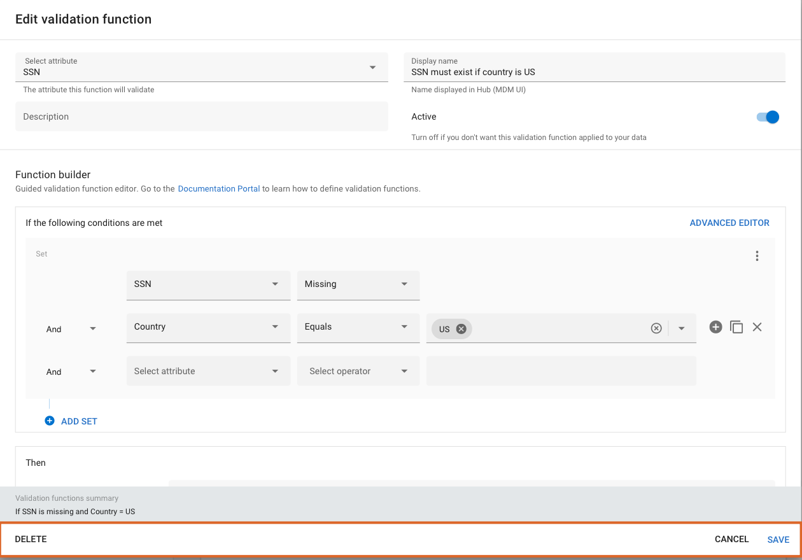
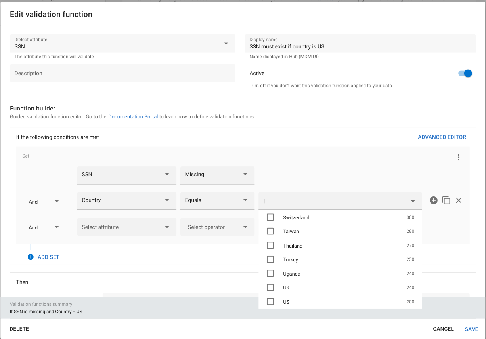
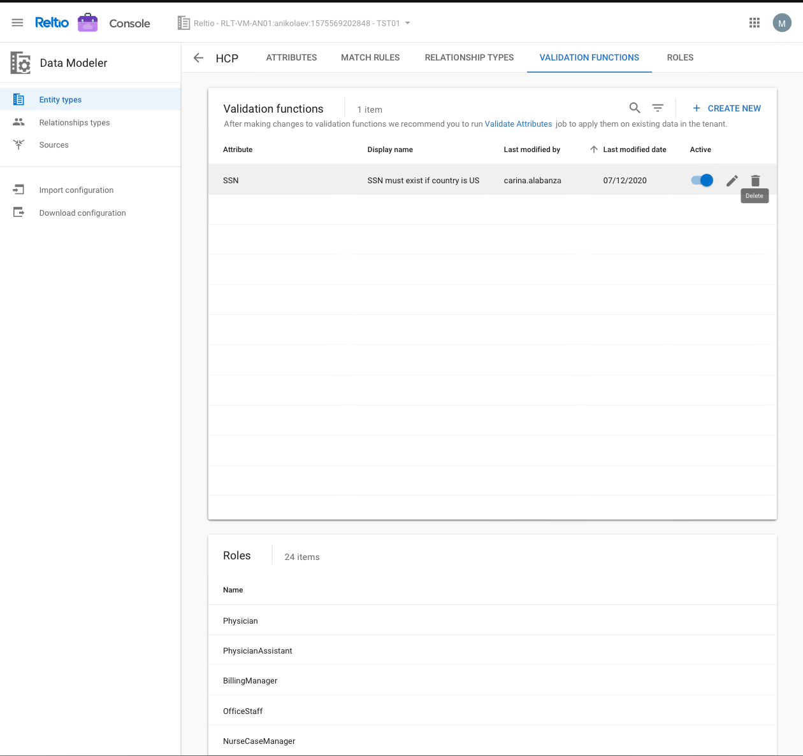
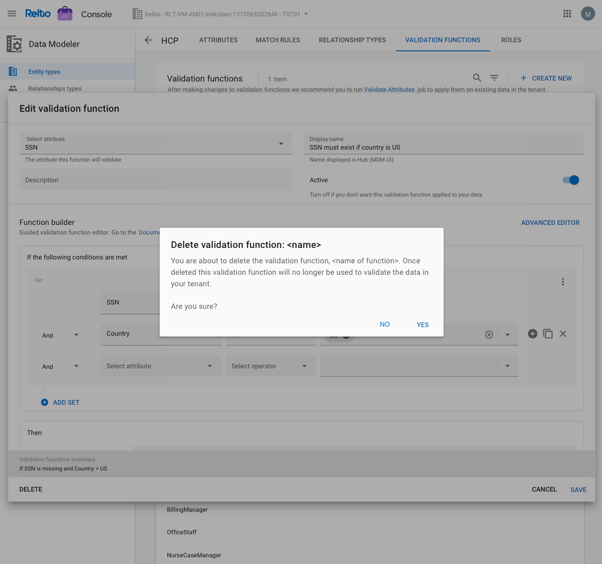
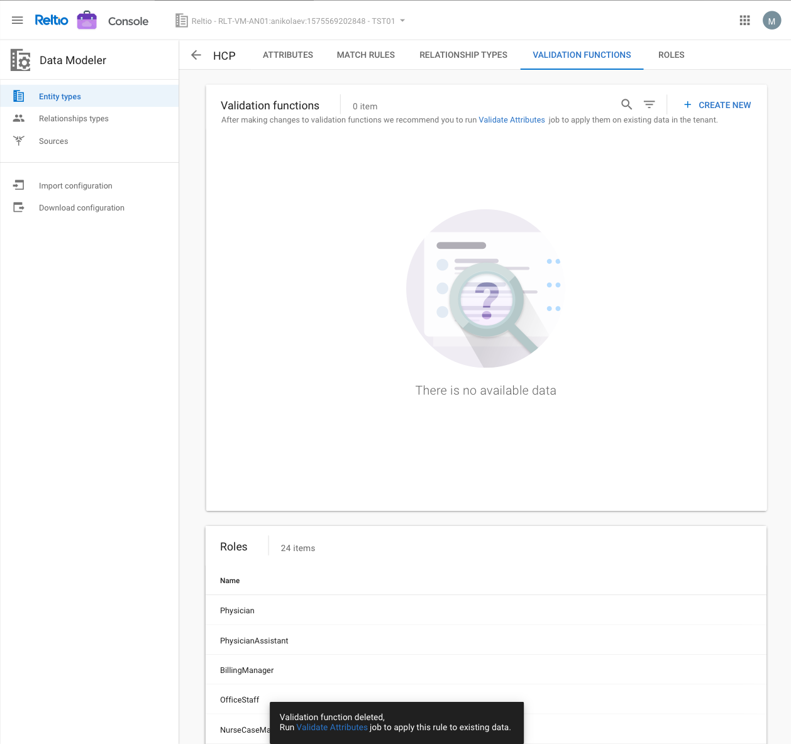
Impact
Research Insights
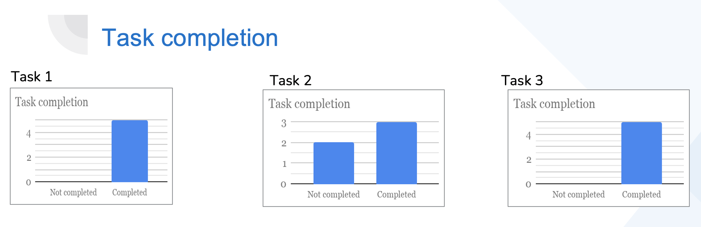
Task Completion Rate
- Overall, this tool satisfies user's needs. Most participants, especially Data Configurators understand how to use Data Validation Function.
- However, the success rate is not high on some specific tasks (Edit attribute). For example, the success rate for the activity " Edit attribute" on the DVF is 50% successful. This is hard for most participants because this activity is relatively new for them. Research insights lead to 20% higher success rate. Research Impact is the Key. Presenting Readout is not the end
During my one-on-one meetings with my manager, one of the most important lessons that I learned is how to make the research influential. After presenting, it is not the time to celebrate and relax. Instead, creating a spreadsheet and keeping track of the implementation of different research findings is the key. Thus, after wrapping up the 1st project, I documented all the important notes, meeting recording to the group Confluence, and created a spreadsheet to follow the project. Even after presenting, I still schedule meetings to discuss the findings when engineers have questions. I firmly believe that it is not how many research findings you have synthesized, it is all about how much you push the project forward and create a better experience for users and your colleagues.
Error rate
- The Error rate decreased by 40%.
- Most users found it pretty easy to use. However, there are some improvements that can be made (e.g. Editing attributes).
- Set up baseline metrics for future designs
Reflections
It's important to be more "Insight driven" than "Data driven"
During my one-on-one meetings with my manager, one of the most important lessons that I learned is how to make the research influential. After presenting, it is was not time to celebrate and relax. Instead, creating a spreadsheet and keeping track of the implementation of different research findings is the key. Thus, after wrapping up the 1st project, I documented all the important notes, meeting recording to the group Confluence, and created a spreadsheet to follow the project. Even after presenting, I still schedule meetings to discuss the findings when engineers have questions. I firmly believe that it is not how many research findings you have synthesized, it is all about how much you push the project forward and create a better experience for users and your colleagues.
Communication is key
Internship onboarding was hard. It is even harder for a remote internship. My main team is a group of 5 people in different timezones in the World. Starting a project without face to face communication is challenging. I am a visual person. When I try to make sense of things, any form of structure (e.g., a table, a tree, a diagram, a story) brings me comfort in the chaotic sense-making process. Thus, my remote internship onboarding turned into a Axure/notability board session. I created lots of graphs, whiteboard, roadmap, brain-writing with many sticky notes to help me understand the product line, and communicate with my team members. This is also a good way to double-check I understand my teammates completely. In this case, the communication between me and my team members became more efficient.
Be aware of the potential bias while analyzing data
While analyzing data, I initially prioritized the findings that were mentioned several times by our participants and reprioritize those with low frequencies. In classical statistics, this makes sense because the average is a way to measure data trends. However, during the weekly meeting with my colleagues, they brought up the Bayesian theory. In this theory, a single case can have a high impact. I learned to be aware of the data bias and rethink the big picture.